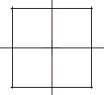

Oxygen 2 Light je oficiální program na tvorbu addonù. Mùžete si ho ztáhnout ze sekce download nebo z oficiálních stránek.
Stáhnìte si k tomu ještì Buldozer což je prohlížeè.
3D Modelování
Jakmile to pochopíte, zjistíte, že je to velice jednoduché. Uvedu tady pár názvù, které budu používat.
Vertex
Vertex je bod, který oznaèuje kostru modelu. Na obrázku vidíte ètyøi
vertexy.
Face
Face jsou 3 - 4 spojené vertexy. Existují dva druhy face:
1. Jednostraná. Plocha vzniklá ze spojených vertexù je viditelná
jen z jedné strany. Vytvoøíme ji: Create > New Face nebo F6.
2. Oboustraná. Plocha vzniklá ze spojených vertexù je viditelná z
obou strann. Vytvoøíme ji: Create > New Face, Create > New Face
nebo dvakrát stiskneme F6.
Face Jednostranná
Oboustraná


Modelování není nic jiného než
vertexy spojené do face. Musíte posouvat vertexy podél os X, Y, Z do té
doby dokud nebudou mít správný tvar a
pak je spojit do face. Líp se to asi vysvìtlit nedá. Musíte si s tím pohrát dokud to nepochopíte.
Prostøedí Oxygenu

Zde
popíšu jednotlivá tlaèítka zaènu nahoøe, z leva do prava, a potom
dole z leva do prava.
1. Nový dokument 2. Otevøít 3. Uložit 4. Vyjmout 5. Kopírovat 6. Vložit
7. Zpìt 8. Vpøed 9. Pustí Buldozer 10. Oznaèí všechny spojené
vertexy 11. Oznaèí 1 vertex 12. Oznaèí Face 13. To nevím co znamená
14. Pøiblížení 15. Otoèí oznaèenou èást 13. Zmenší oznaèenou
èást 15. Pøevrátí podle osy X 16. Pøevrátí podle osy Y 17.
Nastavení Face 18. Nastavení Vertexù 19. Zmìna barvy vyplnìného
modelu v Oxygenu 20. Textura
21. - 25. Pohledy 26. - 31. Povolené osy pøi posouvání 32. Zakázaní
rotace 33. Pohled na støed 34. Vyplnìný model 35. Je vidìt jen ta èást
nevyplnìného modelu, která by byla vidìt ve vyplnìném modelu 36.
Zobrazení møížek 37. Nevím 38. - 40. Poloha myši

1. Seznam LODù použitých v modelu. Aktivujete klávesou Alt + L
2. Seznam Selekcí použitých v modelu. Aktivujete Window>>Named
selections
3. Historie. Zde najdete nìkolik akcí, které jste provedli jako poslední.
Okno aktivujete klávesou Alt + H
4. Seznam textur použitých v daném LODu. Když zapnete Preview uvidíte
i jejich náhled. Okno aktivujete klávesou Alt + T
5. Named propertys. Sem se píšou rùzné nastavení pro model. Jaká to
jsou si povíme u každého druhu modelu, protože jsou u každého typu
jiné. Okno aktivujete klávesou Alt +
P
6. Mass. Zde se nastavuje váha modelu. Je aktivní pouze v Geometry LODu.
Okno aktivujete klávesou Alt + M
Nastavení
Oxygenu
Do nastavení se dostanete pøes
File>>Options. (Kliknìte na obrázek pro zvìtšení)
Texturování
Texturování v
Oxygenu je úplnì perfektnì udìlané, protože si mùžete dát texturu
rovnou na pozadí a dìlat model podle ní. Abyste toho dosáhli
postupujte podle následujících krokù.
{kind=link}